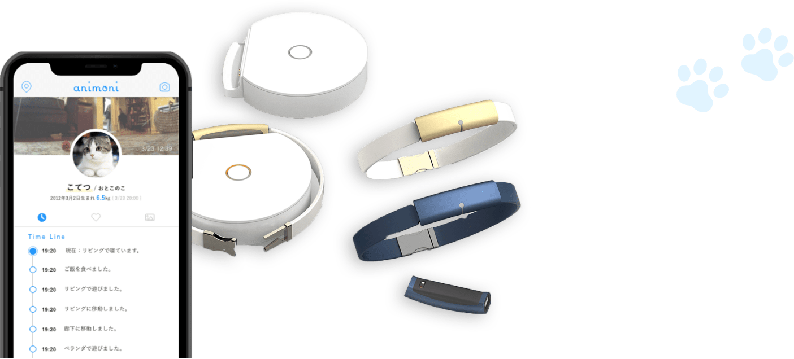

猫の生活をアプリで管理
世界中の猫と飼い主が1秒でも長く一緒にいられるように、
猫の生活をテクノロジーで見守る。
世界中の猫と飼い主が1秒でも長く一緒にいられるように、
猫の生活をテクノロジーで見守る。
アニモニ / animoni
猫の生活をアプリで管理
animoni(アニモニ)は、あなたの代わりに愛猫の様子を
見守ってくれる、首輪型のウェアラブルデバイスです。
首輪に内蔵されたデバイスが猫を見守り、日々を記録します。animoniを通じて飼い主様は大切な愛猫のことをもっともっと、知ることができます。
世の中の猫たちが、
できるだけ長く幸福な一生をおくってほしい。
そんな願いを込めた“絆の首輪”です。
の4つの特徴
01
次世代の見守り首輪と
スマホで猫ウォッチ
猫の活動データを24時間計測。
愛する猫の様子(走る・歩く・食事・睡眠など)と、お部屋の室温が外出先からでもスマホで分かります。
02
猫の健康管理をサポート
猫のデータは常時蓄積されるので、
運動不足や食事の回数などを知ることができ、愛猫の健康管理にも役立ちます。
03
多頭飼い対応
多頭飼いにも対応！複数の猫を飼っていても、同じ時間帯にそれぞれどんな行動をしていたかなど、１つのアプリで管理できます。
04
みんなで見守る
家族や獣医師さん、キャットシッターさんなどにもanimoniアプリのアカウントをシェアすることができます。
みんなで愛猫を見守ることができるので安心です。